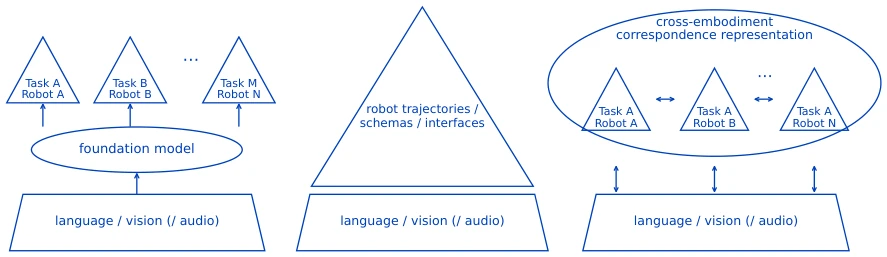

机器人领域正陷入“规模崇拜”，认为数据越多模型越大就能通吃万物。然而，语言模型可以靠互联网数据 scaling，机器人却受限于物理身体（Goldberg, 2025）。现有工作多关注最终成功率，却忽略了从“共享模型”到“真机执行”之间的巨大鸿沟。比如，SayCan 能规划任务，但具体技能调用依赖目标机器人已有的 API（Ahn et al., 2023）；RT-X 虽整合多源数据，但不同机械臂的接口对齐仍需人工干预（Open X-Embodiment Collaboration et al., 2023）。这种“隐形工程”导致复现困难，且不同系统的实际部署价值不可比。本文旨在厘清哪些知识可复用，哪些必须针对新机器人重新工程化，避免盲目追求模型规模而忽视落地适配。
—

Figure 3: Three research directions viewed through the embodiment gap. Sharing semantics and perception broadens the meanings and visual cues available to a robot. Sharing robot data and interfaces makes robot experience easier to reuse and its conditions easier to trace. Learning correspondence across embodiments models relations among different bodies through object motion, abstract actions, morphology, and contact cues. The directions overlap and are not mutually exclusive categories.
Figure 4: Embodiment Adaptation Curves (EACs). An EAC shows how performance changes with a reported amount of work on the target robot. The horizontal axis can use demonstrations, real-robot trials, human interventions, or another comparable measure of adaptation effort. Panel (a) gives a conceptual example, while panel (b) reproduces the few-shot transfer results reported for MOTIF (Zhi et al., 2026) in arXiv:2602.13764v1, Table 3. Panel (c) uses the values reported for Track2Act (Bharadhwaj et al., 2024) in arXiv:2405.01527v2 / ECCV 2024, Table 2, and compares open-loop execution with a residual policy trained on 400 target-robot teleoperation trajectories. It is an endpoint illustration related to the EAC idea rather than a quantitative adaptation curve. MG/G/CG/TG denote Mild, Standard